操作マニュアル
このマニュアルは、アプリ本体の画面とデータから毎回自動で作られます。画面・日程・加点・質問を変えると、ここも同時に変わります。
版 c7d2f1・26画面・表示ブランド：スマートコンテンツ
はじめに
AI導入補助金コンシェルジュは、申請に必要な書類と情報を、専用リンク1本で集めて進行を管理するツールです。スタッフは「スタッフ画面」、お客様はスマホで「お客様の画面」を使います。
- スタッフが名刺から案件を作り、専用リンクをLINEで送ります。
- お客様がリンクを開き、書類のアップ・質問・お手続き・加点を進めます（全部で約2時間18分が目安）。
- スタッフは「今日やること」に出る項目を上から片づけ、申請まで進めます。
| ステップ | ひとことで | 自社がやること | お客様がやること |
|---|---|---|---|
| 1. 検討 | 当社と導入内容を決める | 導入するITツールと見積を決める 締切から逆算して公募回を決める 名刺から案件を作り、専用リンクを送る | どの業務を任せたいかを相談する |
| 2. 申請 | 書類・質問・手続き・加点 | 書類・回答・お手続きの回収 加点3項目の登録を案内する 申請データを入力し、照合する 申請マイページへお客様を招待する | 書類3点のアップと4つの質問 gBizIDプライムと連絡用メール 加点3項目の登録 申請マイページで内容を確認し、宣誓して提出 |
| 3. 交付決定 | 結果を待つ（契約・支払いはまだ） | 事務局からの訂正依頼に対応する 交付決定日に結果を確認する | 結果を待つ この間に契約・支払いをしない |
| 4. 事業実施 | 契約・導入・支払い | 交付決定日以降に契約・請求する 導入・初期設定・研修 振込明細などの証憑を回収する | 契約し、期限内に支払う（振込） 導入と研修に参加する |
| 5. 実績報告 | 支払いの証拠を提出 | 実績報告を作成し、お客様と提出する 事務局の確認に対応する | 請求書・領収書・振込明細を提出 申請マイページで報告を提出 |
| 6. 補助金入金 | 補助額を承認して入金 | 補助額の確定を確認する 入金を確認し、効果報告の時期を登録する | 申請マイページで補助額を承認（SMS認証） 入金を確認する |
次の締切：7次 12/1（火）（あと6日）。日程は「資料編」を見てください。
スタッフ編
スタッフ
今日やること
その日に対応することが、優先度の高い順に並びます。ログインしたら最初に開く画面です。
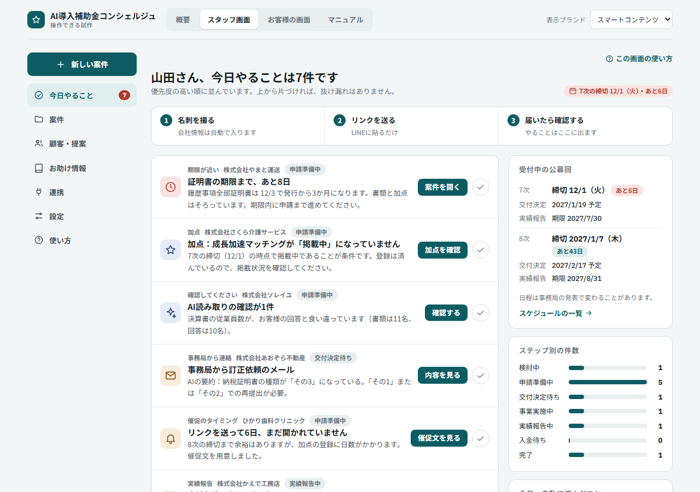
- 上から順に読み、各行のボタン（「案件を開く」「催促文を見る」など）で対応します。
- 対応が終わったら、右の ✓ を押して「済み」にします。
- 右側で、受付中の公募回（次は7次・締切 12/1（火））と、ステップ別の件数を確認できます。
- 「今日、自動で済んだこと」には、システムが代わりに済ませた作業が出ます。
- ここに出る項目の種類：期限が近い・加点・確認してください・事務局から連絡・催促のタイミング・実績報告・事業実施
スタッフ
案件
すべての案件を、ステップ別のボード、または一覧表で見る画面です。
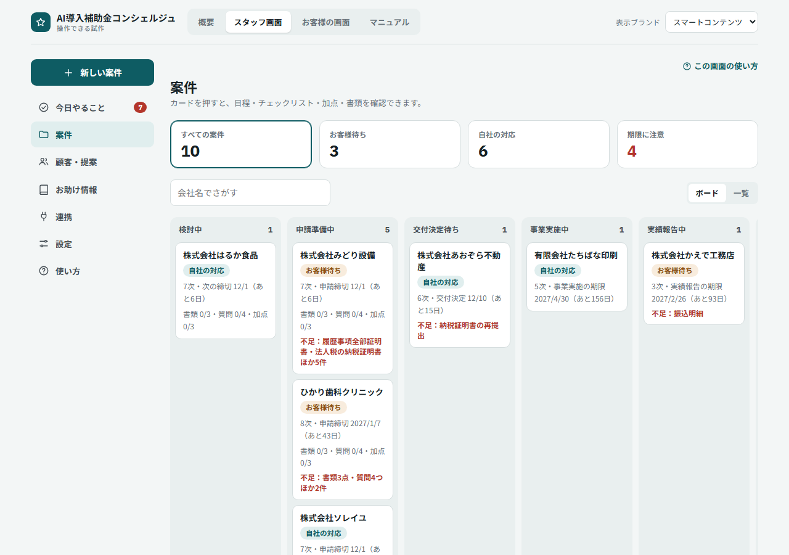
- 上のタイル（すべて・お客様待ち・自社の対応・期限に注意）を押すと絞り込めます。
- 会社名の一部を入れると検索できます。
- 「ボード」と「一覧」で表示を切り替えます。カードや行を押すと、案件の詳細が開きます。
- ボードの列：検討中 → 申請準備中 → 交付決定待ち → 事業実施中 → 実績報告中 → 入金待ち → 完了
スタッフ
案件の詳細
1社分の日程・やること・書類・加点をまとめて見る画面です。
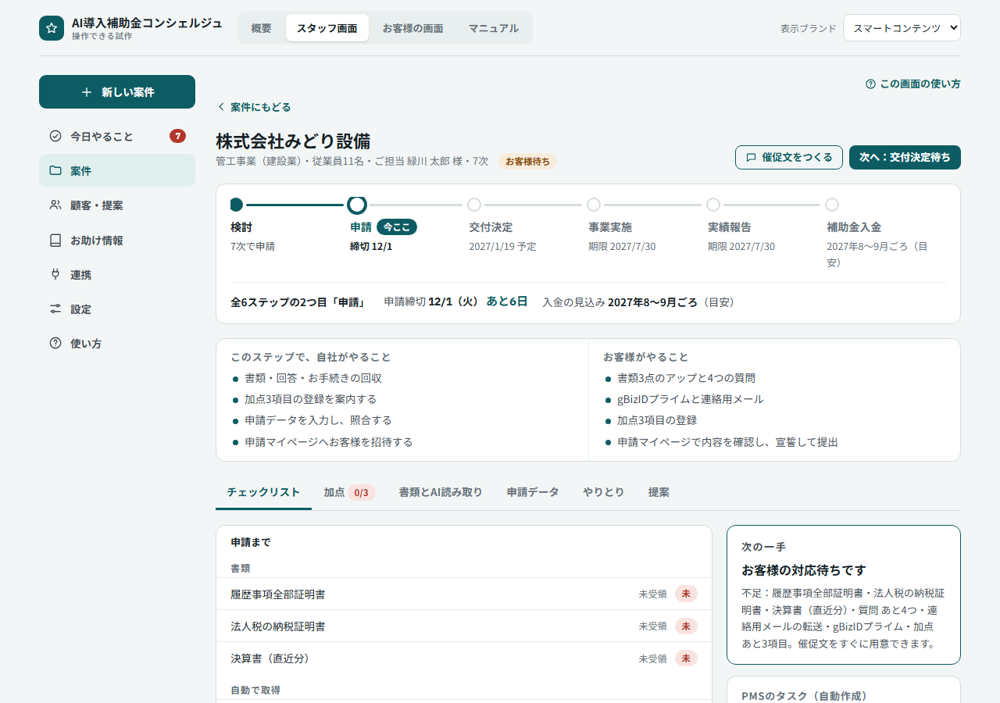
- 上部の6ステップで、いまどこにいるか（今ここ）と、次の期限を確認します。
- 「このステップで、自社がやること／お客様がやること」を見て対応します。
- 右上の「次へ」で次のステップに進めます。不足があると進まず、残っているものが表示されます。
- 「催促文をつくる」を押すと、不足分だけを並べたLINE用の文面ができます。
- タブ：チェックリスト・加点・書類とAI読み取り・申請データ・やりとり・提案
スタッフ
案件：チェックリスト
申請までの準備と、申請後の手続きの「済・未」を一覧で確認するタブです。
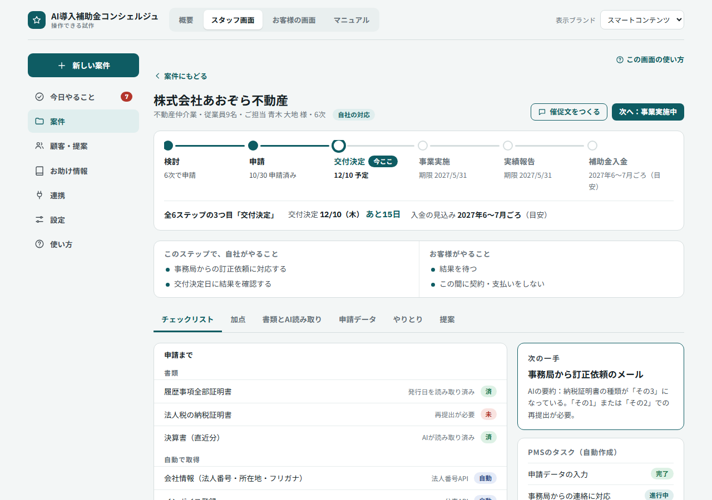
- 「申請まで」に、書類・自動取得・お客様の回答・事前のお手続き・加点の状況が並びます。
- 「申請してから入金まで」に、提出から入金までの手続きが並びます。
- 右の「次の一手」に、いまやるべきことが出ます。PMSのタスクはステップに合わせて自動で作られます。
スタッフ
案件：加点
審査で有利になる加点項目の進み具合を確認するタブです。
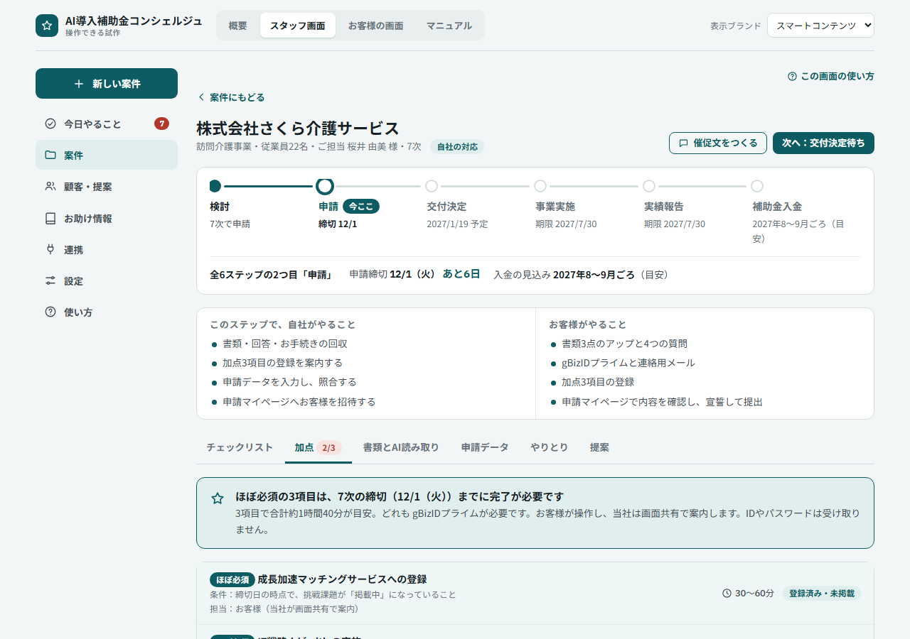
- ほぼ必須の3項目（成長加速マッチングサービスへの登録・IT戦略ナビwith の実施・省力化ナビの活用）の状況を確認します。合計 約1時間40分 が目安です。
- 締切日の時点で完了していることが条件です。未のものは「加点の案内文をつくる」でお客様に依頼します。
- そのほかの8項目は、当てはまれば加点になります。
スタッフ
案件：書類とAI読み取り
届いた書類をAIが読み取った結果と、照合の結果を確認するタブです。
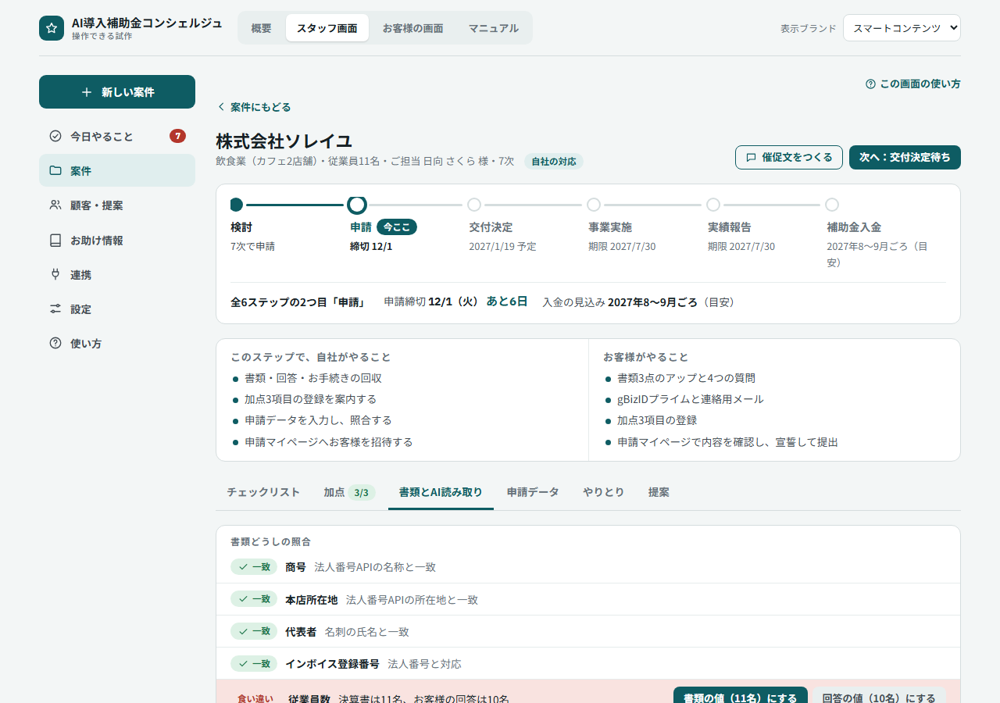
- 届いた書類（履歴事項全部証明書・法人税の納税証明書・決算書（直近分））をAIが読み取り、公開情報・名刺・回答と照合します。
- 食い違いがあると黄色で表示されます。どちらの値を使うかを押して確定します。
- 証明書の発行から3か月までの残り日数が、バーで表示されます。
スタッフ
案件：申請データ
申請に使う項目を、コピーしやすい形で並べたタブです。
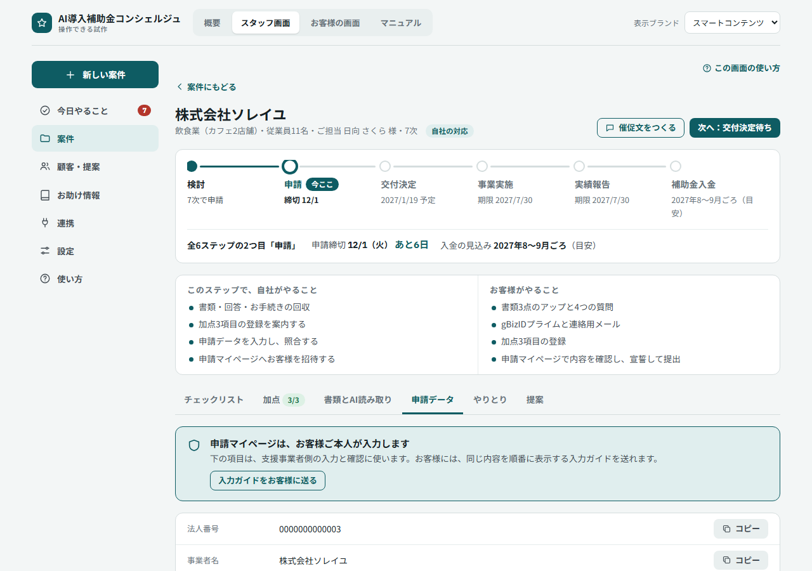
- 各行の「コピー」で、値を申請マイページに貼り付けられます。
- 申請マイページの入力は、お客様ご本人が行います。「入力ガイドをお客様に送る」で、同じ項目をお客様の画面に順番どおりに表示します。
- 「CSVで書き出す」で、まとめて出力できます。
スタッフ
案件：やりとり
案件の出来事を時系列で見るタブです。
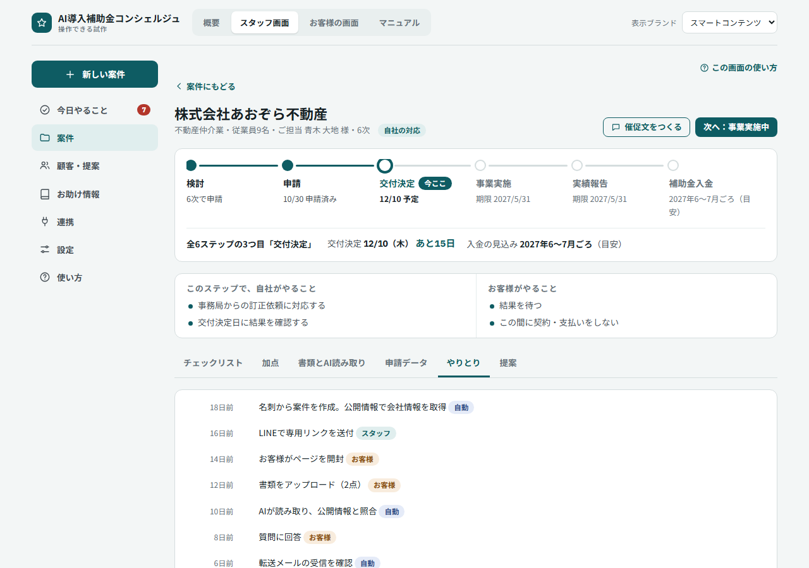
- スタッフ・お客様・自動の出来事が、色分けして並びます。
- 事務局からのメールは、AIの要約つきで記録されます。
- 下の欄からメモを残せます。
スタッフ
案件：提案
この案件で、いまできる提案を確認するタブです。
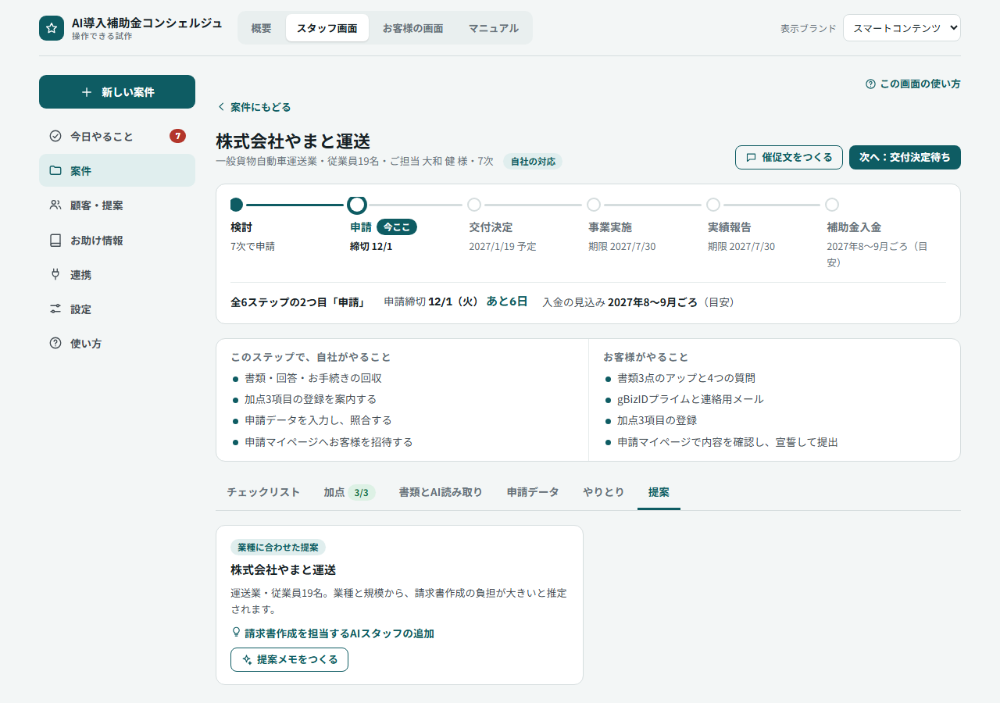
- 保守の更新・追加のご提案・ご紹介のお願いなど、きっかけがあるとここに出ます。
- 「提案メモをつくる」で文面を作り、PMSの営業タスクに登録できます。
スタッフ
顧客・提案
申請で集めた情報を、そのまま顧客台帳として使う画面です。
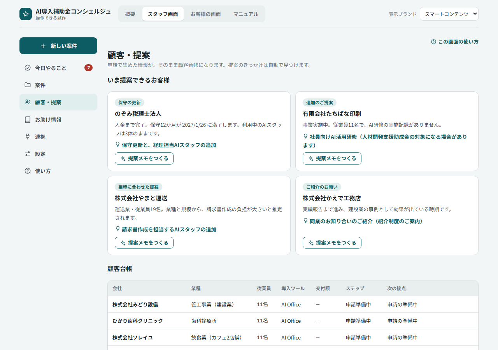
- 「いま提案できるお客様」に、提案のきっかけが自動で並びます。
- 顧客台帳の行を押すと、その会社の案件が開きます。
スタッフ
お助け情報
制度の要点・日程・加点・公式サイトをまとめた画面です。お客様に説明するときに使います。
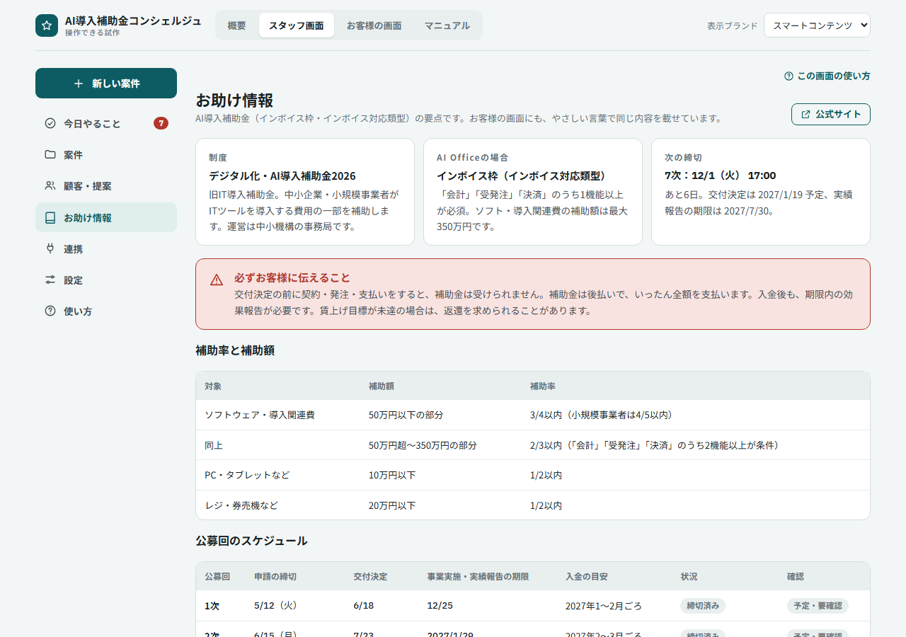
- いちばん上に、制度の概要と次の締切が出ます。
- 「公募回のスケジュール」で、8回分の締切・交付決定・期限と、確認の状態（公式で確認／予定・要確認）を見られます。
- 「加点項目の一覧と所要時間」に11項目が並びます。
- 公式サイトへのリンク（12件）と、事務局コールセンターの番号も載せています。
スタッフ
連携
普段使っているツールとつなぎ、転記や通知を自動にする画面です。
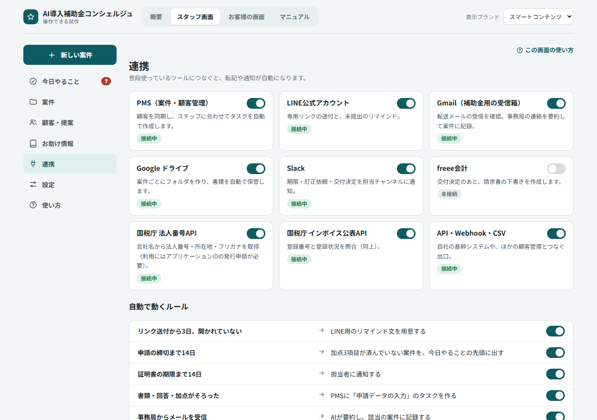
- 9種類の連携先を、スイッチでオン・オフします。
- 「自動で動くルール」（7件）も、スイッチでオン・オフできます。
スタッフ
設定
自社の名前と色、加点の進め方、お客様に聞く質問を決める画面です。変更はお客様の画面にすぐ反映されます。
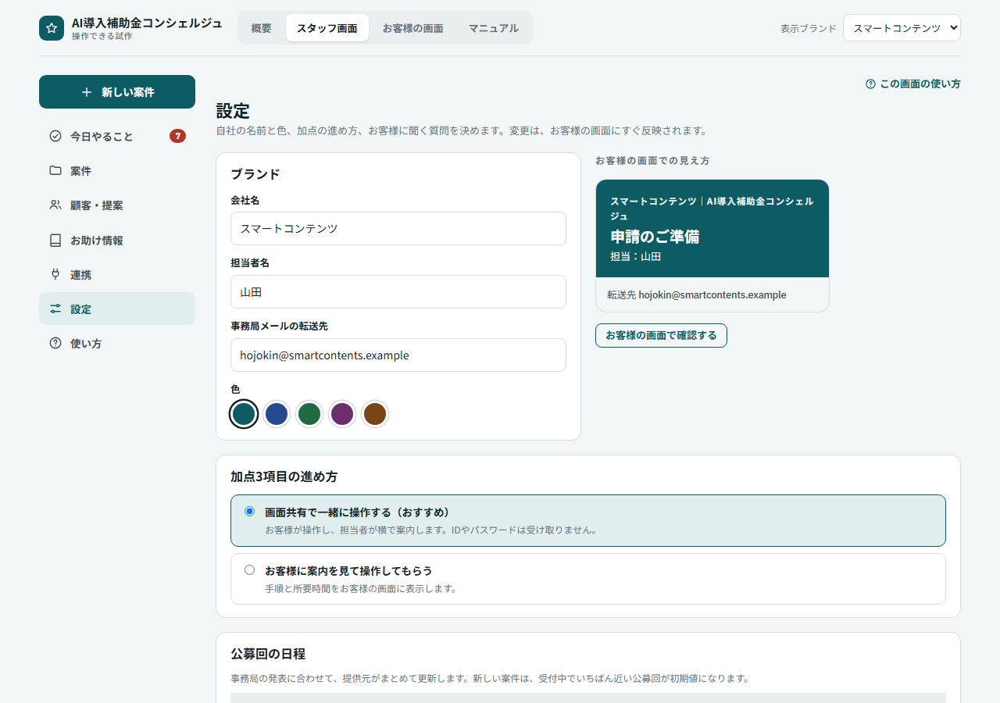
- 会社名・担当者名・事務局メールの転送先と、色を選びます。右側に、お客様からの見え方が出ます。
- 加点3項目の進め方（画面共有で一緒に操作する／お客様に案内を見て操作してもらう）を選びます。
- 公募回の日程は、提供元がまとめて更新します。ここでは確認だけできます。
- お客様に聞く質問（いま4問）を、オン・オフ・追加できます。
スタッフ
新しい案件をつくる
名刺1枚から案件を作り、お客様に送る専用リンクを発行します。左上の「新しい案件」から開きます。
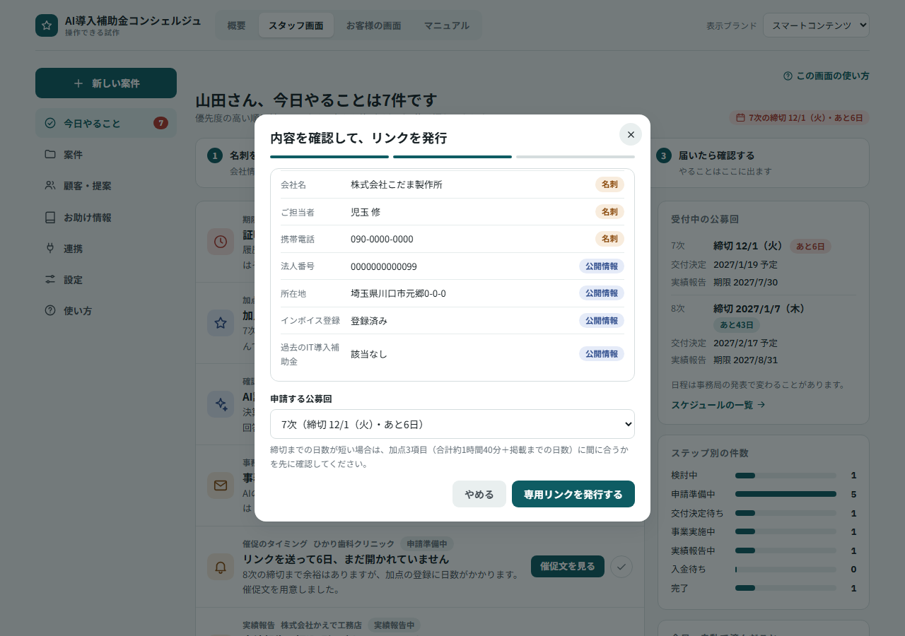
- 名刺の写真を選ぶ（または「サンプルの名刺で試す」）と、AIが会社名と担当者を読み取ります。
- 法人番号などの公開情報で、残りの会社情報が自動で入ります。内容を確認し、申請する公募回を選びます。
- 「専用リンクを発行する」を押すと、LINEで送る文面ができます。コピーして送れば完了です。
スタッフ
催促文
不足しているものだけを並べた、LINE用の文面をつくります。
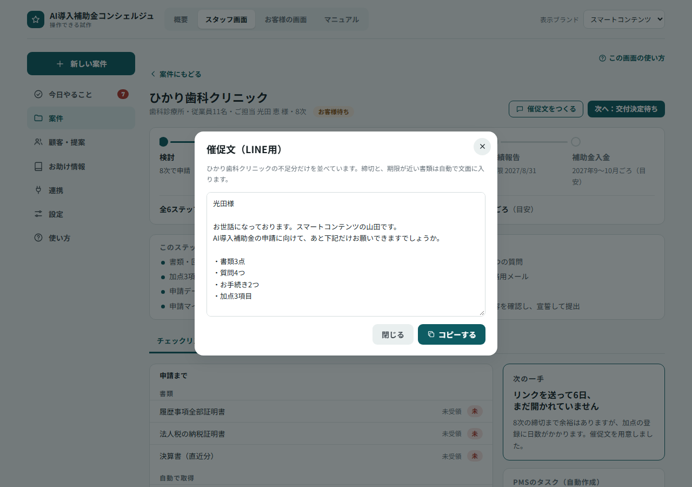
- 案件の詳細や「今日やること」の「催促文をつくる」から開きます。
- 締切と、期限が近い書類が自動で文面に入ります。必要なら書き直して「コピーする」を押します。
スタッフ
提案メモ
提案のきっかけから、お客様に送る文面をつくります。
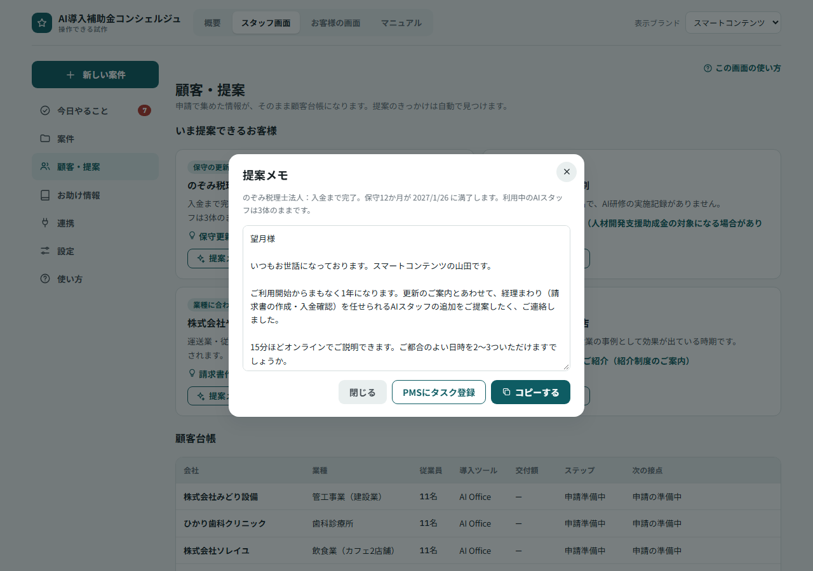
- 「顧客・提案」や案件の「提案」タブで「提案メモをつくる」を押します。
- 文面を確認し、コピーするか、PMSの営業タスクに登録します。
お客様編
お客様・作業時間 全部で約2時間18分
やることリスト（お客様のホーム）
お客様が専用リンクを開くと最初に出る画面です。残りの数・締切・作業時間の目安が分かります。
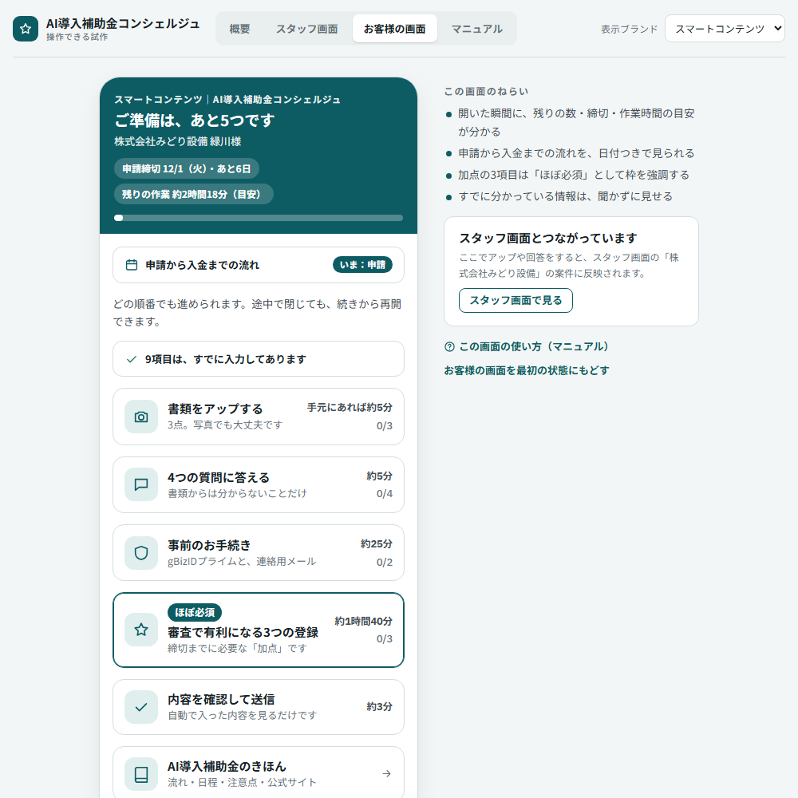
- やることを、好きな順番で1つずつ押して進めます。途中で閉じても続きから再開できます。
- 「申請から入金までの流れ」を開くと、6つのステップと日付が見られます。
- すでに分かっている情報は、自動で入力済みです。分からないことは「LINEで質問」から担当者に聞けます。
お客様・作業時間 約5分（手元にあれば）
書類をアップする
申請に必要な書類をアップする画面です。写真でも大丈夫です。
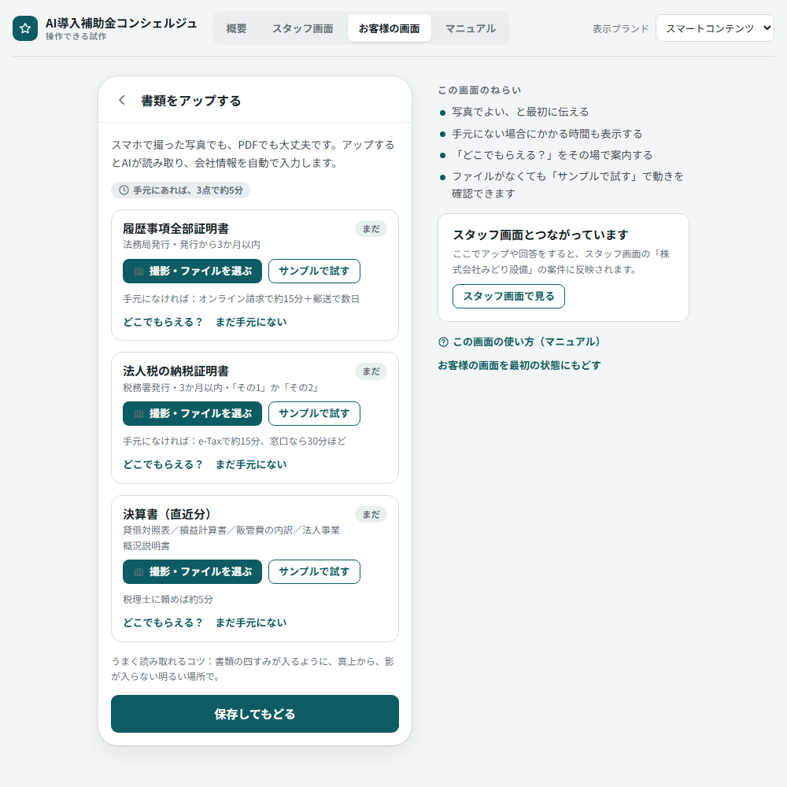
- 履歴事項全部証明書・法人税の納税証明書・決算書（直近分）の3点を、撮影するかファイルを選んでアップします。
- アップすると、AIが読み取って会社情報を自動で入力します。
- 手元にないときは「まだ手元にない」を押せば後日でも大丈夫です。「どこでもらえる？」で取り方が分かります。
お客様・作業時間 約5分
質問に答える
書類からは分からないことだけに答える画面です。
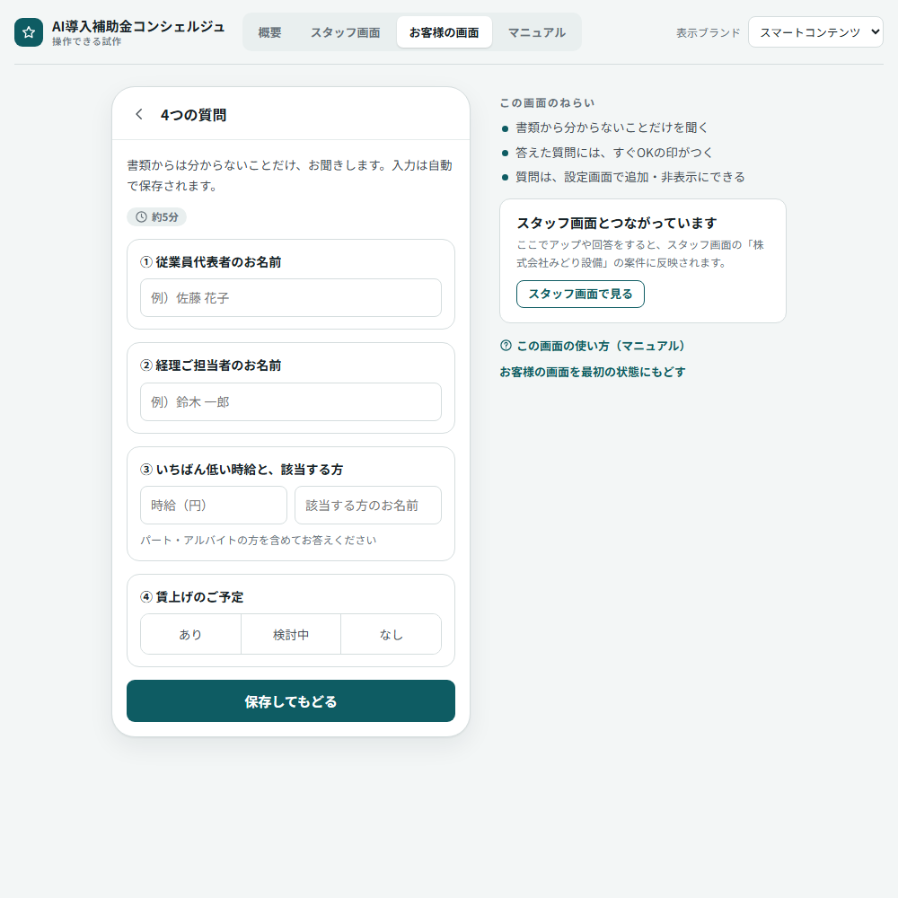
- 質問は4つです：従業員代表者のお名前／経理ご担当者のお名前／いちばん低い時給と、該当する方／賃上げのご予定。
- 入力は自動で保存されます。答えた質問にはOKの印がつきます。
お客様・作業時間 gBizID 約15分＋メール 約10分
事前のお手続き
gBizIDプライムと、補助金の連絡用メールを準備する画面です。IDやパスワードを当社に伝える必要はありません。
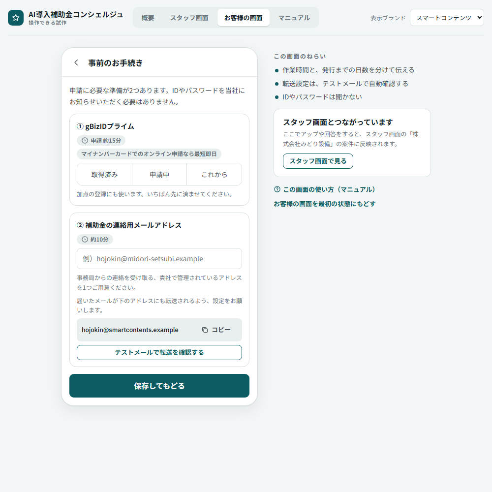
- gBizIDプライムの状況（取得済み・申請中・これから）を選びます。まだの場合は公式ページから申請します。
- 連絡用のメールアドレスを入れ、表示された当社のアドレスへの転送を設定します。
- 「テストメールで転送を確認する」を押すと、転送できているかを自動で確認します。
お客様・作業時間 合計約1時間40分
審査で有利になる3つの登録（加点）
ほぼ必須の加点3項目を登録する画面です。締切日の時点で3つとも済んでいることが条件です。
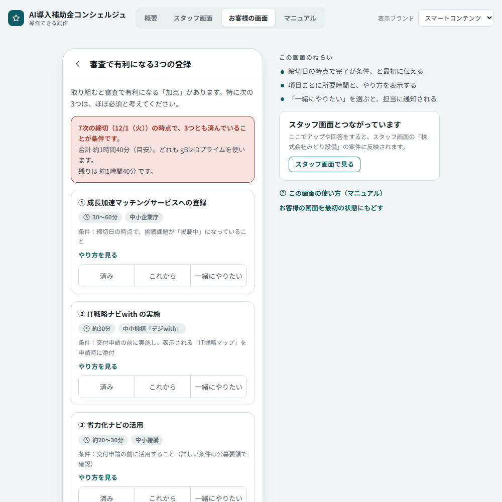
- ① 成長加速マッチングサービスへの登録（30〜60分）：gBizIDプライムでログインし、会員登録 → 挑戦課題（解決したい経営の課題）を登録 → 「掲載中」になったことを確認
- ② IT戦略ナビwith の実施（約30分）：デジwithで「IT戦略ナビwith」を開く → gBizIDプライムを入力し、質問に答える → 表示された「IT戦略マップ」を保存してアップ
- ③ 省力化ナビの活用（約20〜30分）：省力化ナビを開く → 業種と課題を入れ、省力化の提案を確認 → 結果の画面を保存してアップ
- 項目ごとに「済み・これから・一緒にやりたい」を選びます。「一緒にやりたい」を選ぶと、担当者から画面共有の日程の連絡が来ます。
お客様・作業時間 約3分
内容を確認して送信
自動で入った内容を確認して、当社に送る画面です。
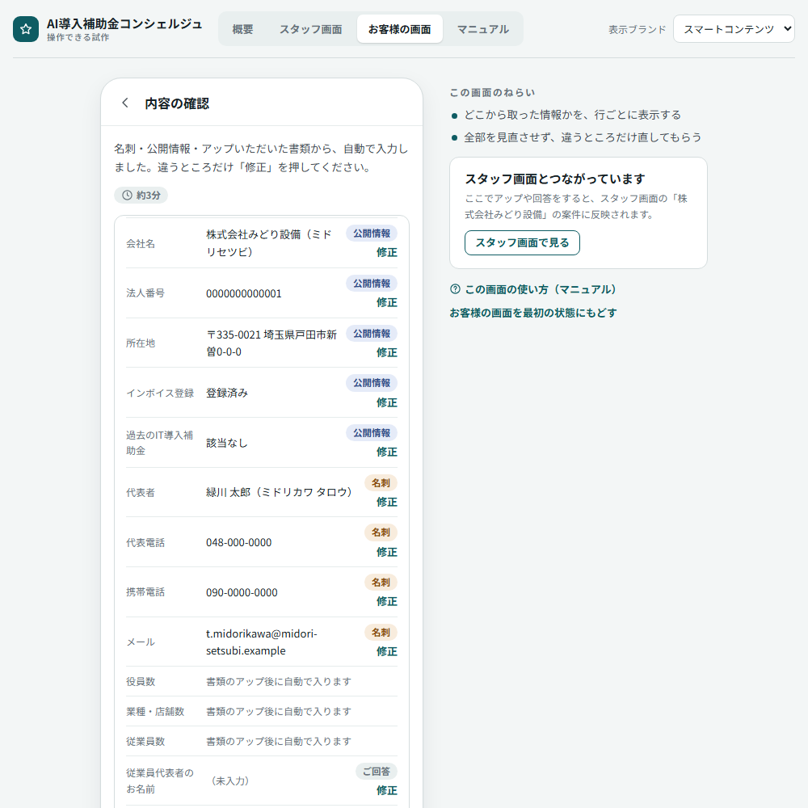
- 行ごとに、どこから取った情報か（公開情報・名刺・書類・ご回答）が表示されます。
- 違うところだけ「修正」を押して直します。
- 「上の内容で間違いありません」にチェックし、「この内容で送信する」を押します。まだそろっていないものがあっても送信できます。
お客様
送信したあと
送信が終わると出る画面です。残っているお手続きと締切だけを短く表示します。
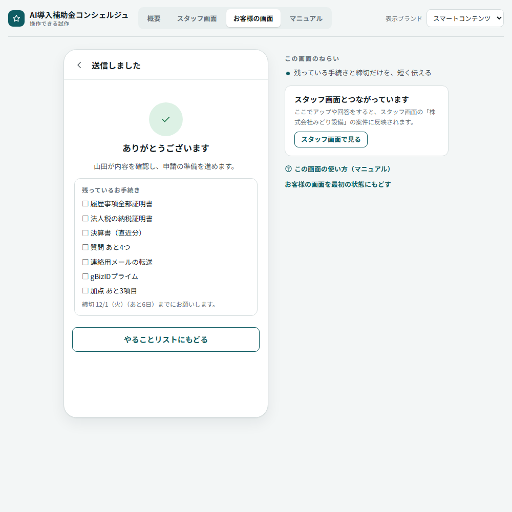
- 残っているものがあれば、締切までに済ませます。「やることリストにもどる」で続きができます。
お客様
申請マイページの入力ガイド
担当者から届く、申請マイページへの入力の手引きです。
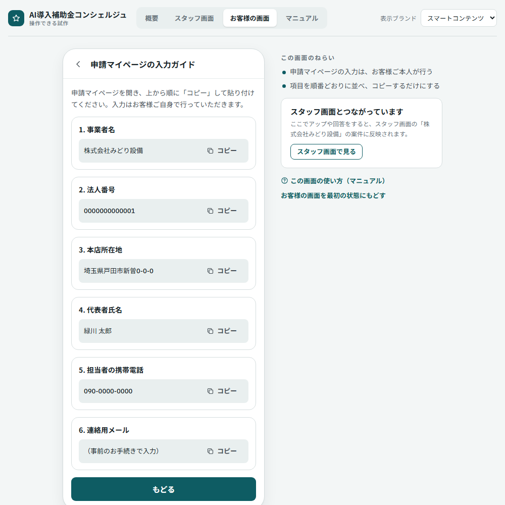
- 申請マイページを開き、上から順に「コピー」して貼り付けます。
- 入力と宣誓・提出は、お客様ご本人が行います。
お客様
AI導入補助金のきほん
制度のしくみ・いまどこ・大事な注意・よくある質問・公式サイトをまとめた画面です。
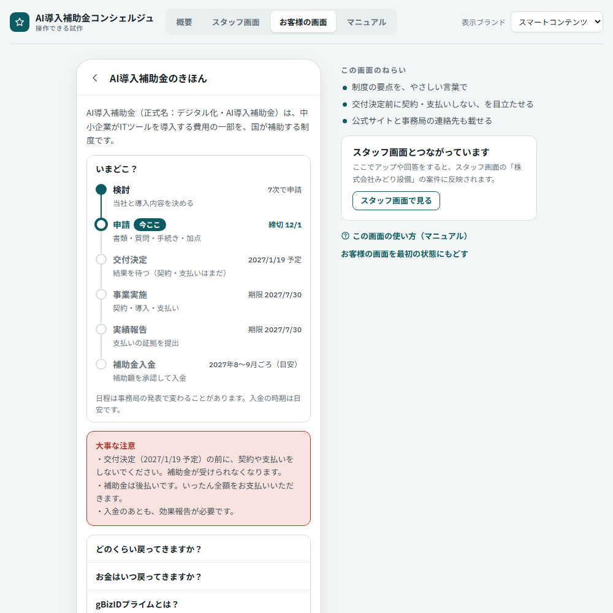
- 「いまどこ？」で、6つのステップのどこにいるかと日付を確認できます。
- 交付決定の前に契約や支払いをしないでください。補助金が受けられなくなります。
- よくある質問を押すと答えが開きます。
お客様
このページの使い方
お客様向けの使い方を、画面ごとにまとめたページです。ホームのいちばん下から開けます。
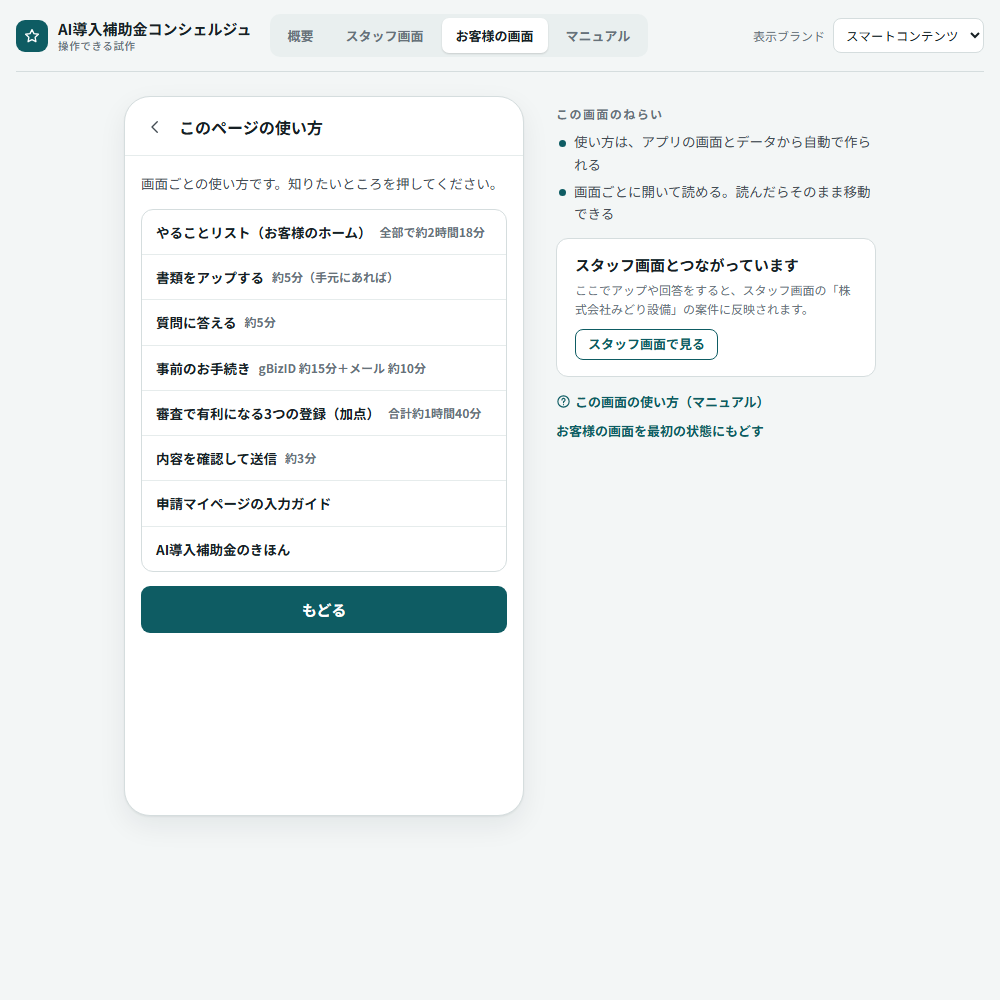
- 知りたい画面の名前を押すと、手順が開きます。「この画面へ」で、その画面に移れます。
資料編
お客様の作業時間の目安
| 作業 | 目安 |
|---|---|
| 書類のアップ（手元にあれば） | 約5分 |
| 質問への回答 | 約5分 |
| gBizIDプライムの申請 | 約15分 |
| 連絡用メールと転送設定 | 約10分 |
| 加点：成長加速マッチングサービスへの登録 | 30〜60分 |
| 加点：IT戦略ナビwith の実施 | 約30分 |
| 加点：省力化ナビの活用 | 約20〜30分 |
| 内容の確認と送信 | 約3分 |
| 合計の目安 | 約2時間18分 |
公募回の日程
| 公募回 | 締切 | 交付決定 | 実績報告の期限 | 入金の目安 | 確認 |
|---|---|---|---|---|---|
| 1次 | 5/12（火） | 6/18 | 12/25 | 2027年1〜2月ごろ | 予定・要確認 |
| 2次 | 6/15（月） | 7/23 | 2027/1/29 | 2027年2〜3月ごろ | 予定・要確認 |
| 3次 | 7/21（火） | 9/2 | 2027/2/26 | 2027年3〜4月ごろ | 予定・要確認 |
| 4次 | 8/25（火） | 10/7 | 2027/3/31 | 2027年4〜5月ごろ | 予定・要確認 |
| 5次 | 9/29（火） | 11/9 | 2027/4/30 | 2027年5〜6月ごろ | 予定・要確認 |
| 6次 | 10/30（金） | 12/10 | 2027/5/31 | 2027年6〜7月ごろ | 予定・要確認 |
| 7次 | 12/1（火） | 2027/1/19 | 2027/7/30 | 2027年8〜9月ごろ | 公式で確認 |
| 8次 | 2027/1/7（木） | 2027/2/17 | 2027/8/31 | 2027年9〜10月ごろ | 締切のみ確認 |
加点項目と所要時間
| 項目 | 所要時間 | 担当 | 条件 |
|---|---|---|---|
| ほぼ必須 成長加速マッチングサービスへの登録 | 30〜60分 | お客様（当社が画面共有で案内） | 締切日の時点で、挑戦課題が「掲載中」になっていること |
| ほぼ必須 IT戦略ナビwith の実施 | 約30分 | お客様（当社が画面共有で案内） | 交付申請の前に実施し、表示される「IT戦略マップ」を申請時に添付 |
| ほぼ必須 省力化ナビの活用 | 約20〜30分 | お客様（当社が画面共有で案内） | 交付申請の前に活用すること（詳しい条件は公募要領で確認） |
| 賃上げの事業計画の策定・従業員への表明 | 1〜2時間（当社と打ち合わせ） | お客様と当社 | 計画を作り、従業員に表明し、達成すること |
| 最低賃金に関する状況 | 追加の作業なし | 当社（自動判定） | 事業場内の最低賃金の状況 |
| SECURITY ACTION「★★二つ星」の宣言 | 約1〜2時間 | お客様（ひな形あり） | 交付申請の前に宣言していること |
| 中小機構「IT経営サポートセンター」の利用 | 60分（オンライン相談） | お客様 | IT戦略ナビwith の代わりになる（どちらか一方のみ加点） |
| 健康経営優良法人2026 | 認定済みなら作業なし | — | 認定を受けていること |
| くるみん・えるぼし認定 | 認定済みなら作業なし | — | 認定を受けていること |
| インボイス未登録の場合、実績報告日までに登録 | 申請約30分＋登録まで数週間 | お客様 | 交付申請時点で未登録で、実績報告日までに登録すること |
| クラウド型・インボイス対応のITツールを選ぶ | 追加の作業なし | 当社 | クラウドを利用したITツール導入の検討 など |
自動で動くルール
| きっかけ | システムがすること | 状態 |
|---|---|---|
| リンク送付から3日、開かれていない | LINE用のリマインド文を用意する | オン |
| 申請の締切まで14日 | 加点3項目が済んでいない案件を、今日やることの先頭に出す | オン |
| 証明書の期限まで14日 | 担当者に通知する | オン |
| 書類・回答・加点がそろった | PMSに「申請データの入力」のタスクを作る | オン |
| 事務局からメールを受信 | AIが要約し、該当の案件に記録する | オン |
| 交付決定日になった | 結果を確認するタスクを作り、契約書と請求書の下書きを作る | オン |
| 入金を確認した | 顧客台帳に保守更新日と効果報告の時期を登録する | オン |
連携先
| 連携先 | できること | 状態 |
|---|---|---|
| PMS（案件・顧客管理） | 顧客を同期し、ステップに合わせてタスクを自動で作成します。 | 接続中 |
| LINE公式アカウント | 専用リンクの送付と、未提出のリマインド。 | 接続中 |
| Gmail（補助金用の受信箱） | 転送メールの受信を確認。事務局の連絡を要約して案件に記録。 | 接続中 |
| Google ドライブ | 案件ごとにフォルダを作り、書類を自動で保管します。 | 接続中 |
| Slack | 期限・訂正依頼・交付決定を担当チャンネルに通知。 | 接続中 |
| freee会計 | 交付決定のあと、請求書の下書きを作成します。 | 未接続 |
| 国税庁 法人番号API | 会社名から法人番号・所在地・フリガナを取得（利用にはアプリケーションIDの発行申請が必要）。 | 接続中 |
| 国税庁 インボイス公表API | 登録番号と登録状況を照合（同上）。 | 接続中 |
| API・Webhook・CSV | 自社の基幹システムや、ほかの顧客管理とつなぐ出口。 | 接続中 |
お客様に聞く質問
| 質問 | 表示 |
|---|---|
| 従業員代表者のお名前 | 表示 |
| 経理ご担当者のお名前 | 表示 |
| いちばん低い時給と、該当する方 | 表示 |
| 賃上げのご予定 | 表示 |
所要時間・入金の目安は当社の見込みです。日程と加点の条件は、公式サイトで確認してください。
生成 2026-11-25 13:31・版 c7d2f1・元データ src/mock.html（アプリを変更すると自動で作り直されます）